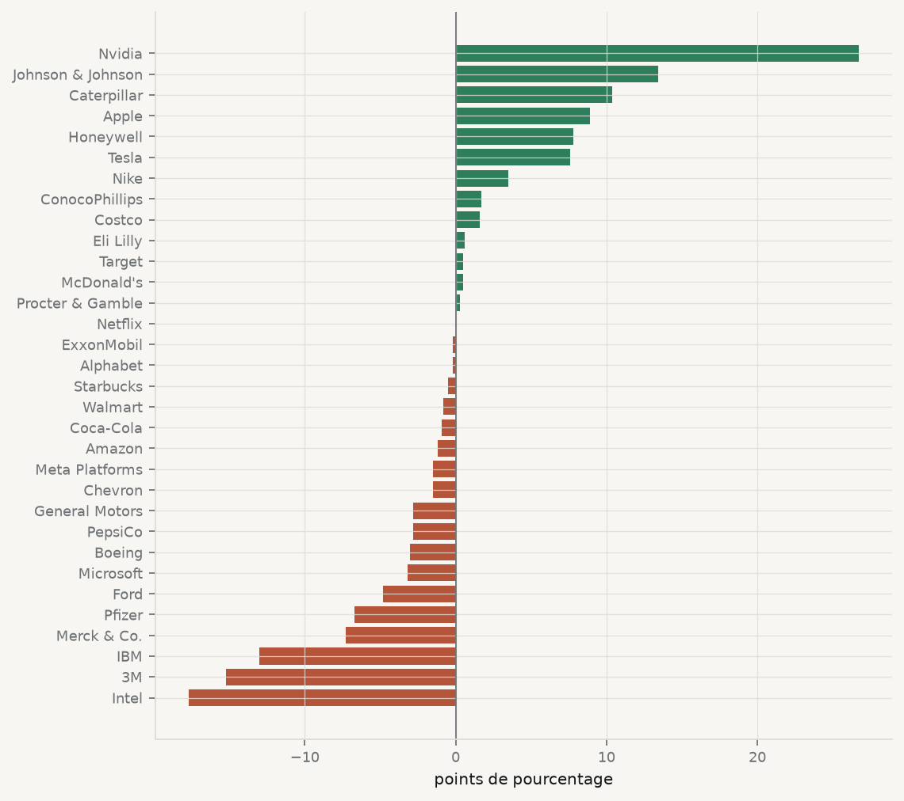
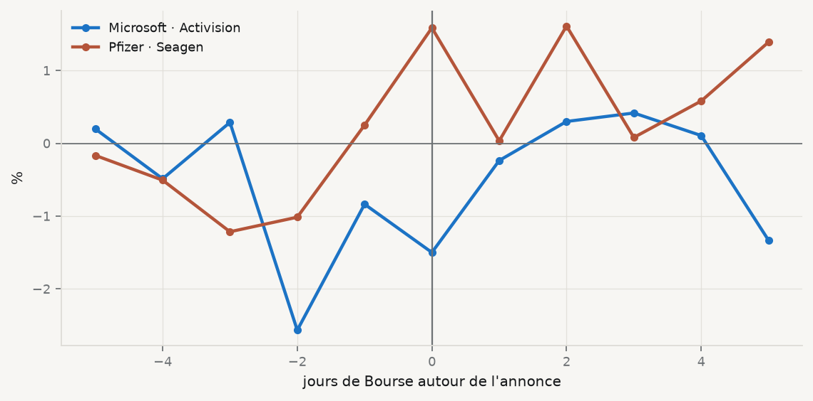

4Manipuler les données : nettoyer, joindre, remodeler, agréger
4.1 Ce que l’on ne voit pas dans un article
Un article de stratégie présente un tableau de statistiques descriptives, puis des régressions. Il ne montre presque jamais ce qui a précédé : des semaines passées à corriger des types, à harmoniser des identifiants, à joindre des sources qui ne parlent pas la même langue, et à décider quoi faire des trous. Ce travail n’est pas préliminaire. C’est là que se prennent la plupart des décisions qui déterminent le résultat — et la plupart des erreurs qui le compromettent.
Ce chapitre part de deux questions que se pose un gestionnaire. La première : qui sont mes vrais concurrents ? Comparer une entreprise à la moyenne de toutes les autres n’a guère de sens ; il faut la comparer à son secteur, la même année. La seconde : les fusions-acquisitions créent-elles de la valeur ? Pour en avoir un premier aperçu, il faut importer des cours boursiers, calculer des rendements entreprise par entreprise, les aligner sur ceux du marché et découper une fenêtre autour de l’annonce. Aucune de ces deux questions ne demande de statistique avancée. Toutes deux demandent de savoir manipuler des tables.
4.2 Nettoyer
Les données arrivent rarement prêtes. Voici une petite table comme on en reçoit d’un collègue ou d’un tableur :
Tout y est du texte : on ne peut ni additionner ni comparer. Le nettoyage suit toujours le même ordre — les noms, le texte, les types, puis les doublons — parce que chaque étape dépend de la précédente : tant que "ford" et "Ford" coexistent, aucune recherche de doublons ne les trouvera.
Deux outils méritent attention. astype(float) échoue dès qu’une cellule n’est pas un nombre ; c’est utile quand on s’attend à des nombres partout. pd.to_numeric(..., errors="coerce") transforme au contraire toute valeur illisible en NaN : c’est commode, mais cela cache le problème si l’on ne compte pas ensuite les valeurs manquantes créées.
4.2.1 Les valeurs manquantes
Dans les données du cours, il n’y a aucun doublon entreprise × année, mais beaucoup de trous :
On a trois options : retirer les lignes (dropna), remplir (fillna) ou signaler (créer une colonne booléenne). La troisième devrait toujours précéder les deux autres. La colonne rd montre pourquoi :
entreprises["rd_manquant"] = entreprises["rd"].isna()(entreprises.groupby("entreprise")["rd_manquant"].mean() .loc[lambda s: s >0].sort_values(ascending=False).round(2))
Les entreprises qui ne publient jamais de ligne « recherche et développement » sont des distributeurs, des chaînes de restauration et des marques de consommation — mais aussi Amazon, qui investit massivement en technologie sous un autre intitulé. Remplir par zéro rangerait Amazon parmi les entreprises les moins innovantes de l’échantillon. L’absence de valeur est ici une information sur la présentation des comptes, pas sur l’effort d’innovation.
4.3 Joindre
Une analyse combine presque toujours plusieurs sources. La jointure (merge) associe les lignes de deux tables qui partagent une clé. Le risque principal est silencieux : si la clé apparaît plusieurs fois du côté où l’on attendait une seule ligne, chaque observation est dupliquée, et rien ne signale l’erreur. Deux arguments de merge la rendent visible : validate="m:1" exige que la table de droite ait au plus une ligne par clé, et indicator=True ajoute une colonne _merge qui dit d’où vient chaque ligne.
Le nombre de lignes n’a pas changé, ce qui confirme la relation plusieurs-à-un. Les lignes sans partenaire sont toutes en 2024 : les données de la Banque mondiale du cours s’arrêtent en 2023. Une jointure how="inner" aurait supprimé une année entière sans le dire ; how="left" avec indicator=True la montre.
La table des secteurs se joint de la même façon, par la colonne secteur :
pd.concat, enfin, n’associe pas des colonnes mais empile des lignes : c’est l’outil pour réunir des fenêtres de rendements calculées séparément, comme plus bas.
4.4 Remodeler
Wickham (2014) appelle rangées (tidy) les données où chaque variable est une colonne, chaque observation une ligne, et chaque type d’unité une table. entreprises.csv est rangé : une ligne correspond à une entreprise et une année. Beaucoup de sources publient pourtant un format large, avec une colonne par année — c’est le format par défaut des téléchargements de la Banque mondiale et de la plupart des tableaux Excel.
pivot refuse les combinaisons index × colonne en double ; pivot_table les agrège avec la fonction qu’on lui donne. La médiane de la marge nette par secteur et par année s’obtient ainsi en une instruction :
4.5 Agréger, et comparer chaque entreprise à son groupe
groupby découpe la table en groupes. Ce que l’on fait ensuite détermine la forme du résultat : aggréduit chaque groupe à une ligne, transformrenvoie une valeur pour chaque ligne d’origine. Le premier produit un tableau de synthèse, le second permet de comparer chaque observation à son groupe.
Pour répondre à la question des vrais concurrents, on calcule le rendement des actifs (ROA), puis la moyenne du ROA du secteur la même année, et l’écart entre les deux :
d = classement.sort_values("ecart_secteur")fig, ax = plt.subplots(figsize=(7.2, 6.4))couleurs = [CL.good if v >0else CL.warn for v in d["ecart_secteur"]]ax.barh(d["entreprise"], d["ecart_secteur"] *100, color=couleurs)ax.axvline(0, color=CL.muted, lw=0.8)ax.set_xlabel("points de pourcentage")ax.tick_params(axis="y", labelsize=8)plt.show()

Figure 4.1: Écart du rendement des actifs à la moyenne du secteur, 2023. Une barre à droite de zéro signale une entreprise plus rentable que ses concurrents directs la même année.
Le choix du groupe de comparaison change le diagnostic. Microsoft affiche un ROA supérieur à celui de la plupart des 32 entreprises, mais inférieur à la moyenne de son propre secteur en 2023, tiré vers le haut par Nvidia et Apple. Inversement, une moyenne calculée sur un très petit groupe ne dit presque rien : Netflix est seule dans son secteur, et son écart y vaut zéro par construction.
secteur
Médias et divertissement 1
Restauration 2
Automobile 3
Énergie 3
Biens de consommation 4
Commerce de détail 4
Industrie 4
Pharmaceutique 4
Technologie 7
Name: ticker, dtype: int64
4.6 Le temps, entité par entité
Dans un panel, toute opération qui regarde « l’année précédente » doit être faite par entité, après un tri. Sans groupby("ticker"), shift et pct_change iraient chercher la dernière année d’une entreprise pour calculer la croissance de la suivante.
La moyenne mobile sur trois ans lisse les à-coups d’une année exceptionnelle et fait apparaître la tendance : la croissance de Tesla ralentit nettement après 2022.
4.7 Les fusions-acquisitions créent-elles de la valeur ? Un premier regard
Le 18 janvier 2022, Microsoft annonce l’acquisition d’Activision Blizzard ; le 13 mars 2023, Pfizer annonce celle de Seagen. Si le marché juge qu’une acquisition détruit de la valeur pour l’acquéreur, le cours de ce dernier devrait baisser plus que le marché autour de l’annonce.
On commence par importer les cours une seule fois, en les gardant dans un cache local :
from pathlib import Pathimport yfinance as yfdef cours(ticker, debut="2021-06-01", fin="2023-12-31"):"""Cours de clôture ajustés, mis en cache dans data/cache/ au premier appel.""" fichier = Path("data/cache") /f"{ticker}.parquet"ifnot fichier.exists(): fichier.parent.mkdir(parents=True, exist_ok=True) d = yf.download(ticker, start=debut, end=fin, progress=False, auto_adjust=True) d.columns = [c[0] ifisinstance(c, tuple) else c for c in d.columns] d.to_parquet(fichier)return pd.read_parquet(fichier)["Close"]prix = pd.DataFrame({t: cours(t) for t in ["MSFT", "PFE", "SPY"]})rendements = prix.pct_change().dropna()rendements.describe().loc[["mean", "std"]].round(4)
MSFT
PFE
SPY
mean
0.0008
-0.0002
0.0003
std
0.0179
0.0168
0.0114
Le fonds SPY, qui réplique le S&P 500, sert de « marché ». Le rendement anormal naïf est la différence entre le rendement de l’acquéreur et celui du marché ; on le cumule sur une fenêtre de cinq jours de Bourse de part et d’autre de l’annonce.
def fenetre(ticker, annonce, avant=5, apres=5): r = rendements[[ticker, "SPY"]].copy() r["anormal"] = r[ticker] - r["SPY"] i = r.index.searchsorted(pd.Timestamp(annonce)) # jour de Bourse de l'annonce, ou le suivant w = r.iloc[i - avant : i + apres +1].copy() w["jour"] =range(-avant, apres +1) w["cumul"] = w["anormal"].cumsum()return wfen = pd.concat([fenetre("MSFT", "2022-01-18").assign(operation="Microsoft · Activision"), fenetre("PFE", "2023-03-13").assign(operation="Pfizer · Seagen")])fen.pivot(index="jour", columns="operation", values="cumul").round(4)
operation
Microsoft · Activision
Pfizer · Seagen
jour
-5
0.0020
-0.0017
-4
-0.0049
-0.0051
-3
0.0029
-0.0122
-2
-0.0257
-0.0102
-1
-0.0084
0.0025
0
-0.0150
0.0159
1
-0.0024
0.0003
2
0.0030
0.0161
3
0.0042
0.0008
4
0.0011
0.0058
5
-0.0133
0.0139
fig, ax = plt.subplots()for (nom, g), c inzip(fen.groupby("operation"), [CL.accent, CL.warn]): ax.plot(g["jour"], g["cumul"] *100, marker="o", color=c, label=nom)ax.axvline(0, color=CL.muted, lw=1)ax.axhline(0, color=CL.muted, lw=0.8)ax.set_xlabel("jours de Bourse autour de l'annonce")ax.set_ylabel("%")ax.legend(frameon=False)plt.show()

Figure 4.2: Rendement anormal cumulé naïf (acquéreur moins SPY) autour de deux annonces d’acquisition. Le jour 0 est le premier jour de Bourse à partir de l’annonce.
Les deux courbes vont dans des directions opposées, et restent de l’ordre d’un ou deux points de pourcentage — à peine plus que l’écart-type d’un seul rendement quotidien de ces titres, qui est lui-même voisin de deux pour cent. Il serait donc imprudent d’en tirer quoi que ce soit.
Ce calcul n’est pas une étude d’événement. Une étude d’événement en bonne et due forme (MacKinlay 1997) estime d’abord, sur une période antérieure à l’annonce, la relation normale entre le titre et le marché (le modèle de marché), plutôt que de supposer qu’ils évoluent un pour un ; elle porte sur un grand nombre d’annonces, dont elle fait la moyenne ; elle teste statistiquement si le rendement anormal moyen diffère de zéro ; et elle s’interroge sur les fuites d’information avant l’annonce et sur les autres nouvelles publiées le même jour. Le code ci-dessus est correct ; c’est la conclusion qu’on serait tenté d’en tirer qui ne le serait pas. Les séances consacrées aux fusions-acquisitions reprendront la question avec la méthode complète.
4.8 À retenir
Nettoyer suit un ordre : noms, texte, types, doublons. errors="coerce" est utile à condition de compter les NaN qu’il crée.
Une valeur manquante se signale avant d’être retirée ou remplie ; elle est souvent une information.
Chaque jointure se contrôle : nombre de lignes avant et après, validate=, indicator=.
Les données rangées — une ligne par observation — sont le format de travail ; melt et pivot font l’aller-retour avec le format large des sources.
agg résume un groupe ; transform compare chaque observation à son groupe. Le choix du groupe fait partie de l’analyse.
Dans un panel, shift, pct_change et rolling s’appliquent par entité, après un tri.
MacKinlay, A. Craig. 1997. « Event Studies in Economics and Finance ». Journal of Economic Literature 35 (1): 13‑39.